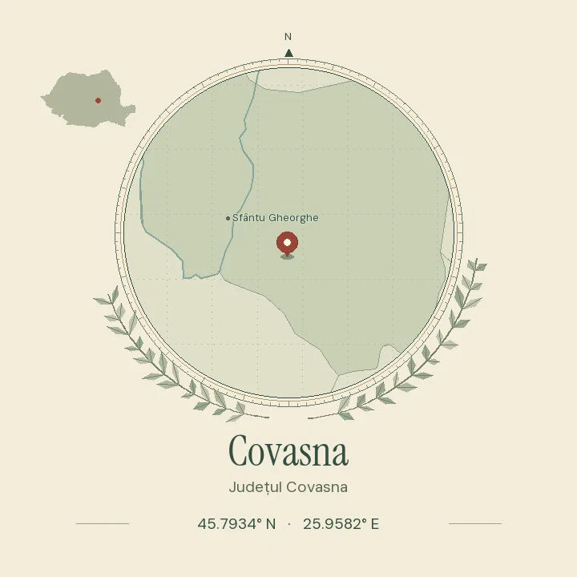
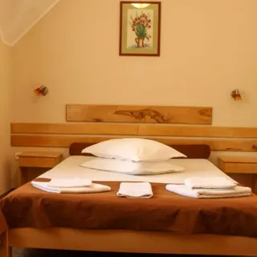
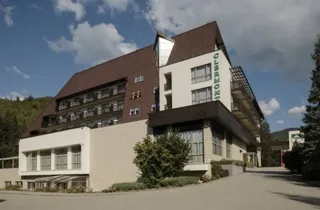
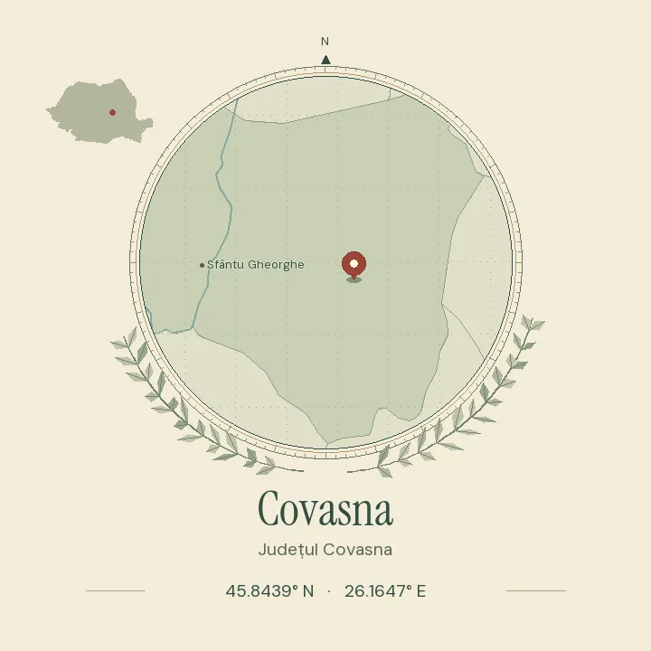

Locații de nuntă în Covasna
- locații în director
- 7
- cu cazare în registrul SITUR
- 4
- medie ponderată Google
- 4,5 / 5
- evaluări Google
- 3.200
Cum alegi o locație în Covasna
În Covasna poți începe comparația cu Saciova Hills (pensiune), Casa din Parc (pensiune), Pensiunea Casa Cecilia Covasna (pensiune). Aceste proprietăți apar în primele poziții când luăm în calcul împreună nota și numărul de evaluări Google. Salvează adresele care vă interesează pentru a le așeza apoi alături în fișa de comparare a ofertelor.
În fișele proprietăților poți compara dotări concrete la Saciova Hills (cazare, parcare gratuită, wi-fi gratuit), Casa din Parc (terasă, cazare, parcare gratuită). Pentru oferta de nuntă, întreabă ce spații și servicii dintre cele prezentate intră în rezervarea privată pentru data voastră.
Dacă vin rude de departe, Casa din Parc are o unitate de cazare asociată în registrul SITUR. Înregistrarea pentru Casa Din Parc cuprinde 16 locuri de dormit în 8 spații de cazare. Întreabă câte camere pot fi păstrate pentru aceeași noapte înainte să trimiți invitaților detaliile de rezervare.
Dacă vrei să vezi două proprietăți în aceeași zi, poți continua de la Hotel Clermont spre Zabola Estate - Transylvania din Zăbala. Punctele lor sunt la 5,2 km în linie dreaptă. Deschide traseul înainte să fixezi ora celei de-a doua vizite, mai ales dacă grupul se deplasează cu autocarul.
Locații pentru vizionare
Ordinea ține cont de nota Google și de numărul evaluărilor. Cum calculăm ordinea

Hartă ilustrată Covasna · Pensiune
Saciova Hills
În relatarea unei sosiri de seară la Saciova Hills, gazdele au sunat cu o zi înainte ca să întrebe dacă oaspeții doresc să găsească cina pregătită.
Saciova, 527145 Covasna+40 745 303 980
Fotografie a locației · Sursa fotografiei Covasna · Pensiune
Casa din Parc
Pensiune liniștită la intrarea în parcul din Covasna, cu cazare între 250 și 450 de lei pe noapte. Utilă pentru găzduirea invitaților la nuntă.
Str. Gheorghe Doja 4, 525200 Covasna+40 758 680 614
Fotografie a locației · Sursa fotografiei Covasna · Pensiune
Pensiunea Casa Cecilia Covasna
Pensiunea Casa Cecilia Covasna, Covasna. Un oaspete de la Casa Cecilia amintește împreună curtea, foișorul și parcarea.
Strada Bercsényi Miklós 4, 525200 Covasna+40 744 707 060
Fotografie a locației · Sursa fotografiei Covasna · Hotel
Hotel Clermont
Hotel cu spa și piscină interioară în Covasna, cu 2.398 de evaluări; oaspeții laudă liniștea și mâncarea, dar unii critică curățenia camerelor.
Strada Mihai Eminescu 225A, 525200 Covasna+40 267 342 123
Fotografie a locației · Sursa fotografiei Covasna · Hotel
Bacolux Santis, Covasna
Hotel de tratament pe Strada Unirii din Covasna, cu restaurant, bar și grădină; nunțile nu sunt documentate, iar recenziile vorbesc mai ales de baza medicală.
Strada Unirii 6, 525200 Covasna+40 371 057 070
Fotografie a locației · Sursa fotografiei Covasna · Hotel
Hotel Bradul
Hotel de tratament în Covasna cu băi minerale și restaurant lăudat pentru porții mari și prețuri mici. Clădirea e criticată ca învechită.
Strada Mihai Eminescu 225, 525200 Covasna+40 267 340 081
Hartă ilustrată Covasna · Bed & Breakfast
Botimi
Pensiune în Covasna cu terasă acoperită și foișor, unde un grup de 30 de persoane a mâncat și a dansat. Recenzii foarte împărțite despre curățenie.
Strada Kálvin 2, 527005 Covasna+40 766 417 175
Întrebări despre locațiile din Covasna
Unde pot dormi invitații în Covasna?
În registrul de cazare SITUR găsim Casa din Parc (16 locuri de cazare), Hotel Clermont (218 locuri de cazare), Bacolux Santis, Covasna (30 de locuri de cazare). Verifică ce camere sunt libere pentru noaptea evenimentului.
Ce proprietăți din Covasna au grădină sau terasă?
Casa din Parc (terasă); Hotel Clermont (grădină); Bacolux Santis, Covasna (grădină). Cere administratorului condițiile de folosire pentru o petrecere privată.
Care locație din Covasna are cele mai multe evaluări Google?
Hotel Clermont are 2.398 de evaluări în profilul Google folosit la documentare. Evaluările acoperă și alte experiențe la proprietate, inclusiv vizitele fără eveniment.
Vizionări în apropiere
- Zăbala · 1 locație. Între Hotel Clermont și Zabola Estate - Transylvania sunt 5,2 km în linie dreaptă.
- Moacșa · 1 locație. Între Saciova Hills și Conacul Benke sunt 7,9 km în linie dreaptă.
- Coșeni · 1 locație. Între Saciova Hills și Conacul Nagy sunt 12,8 km în linie dreaptă.